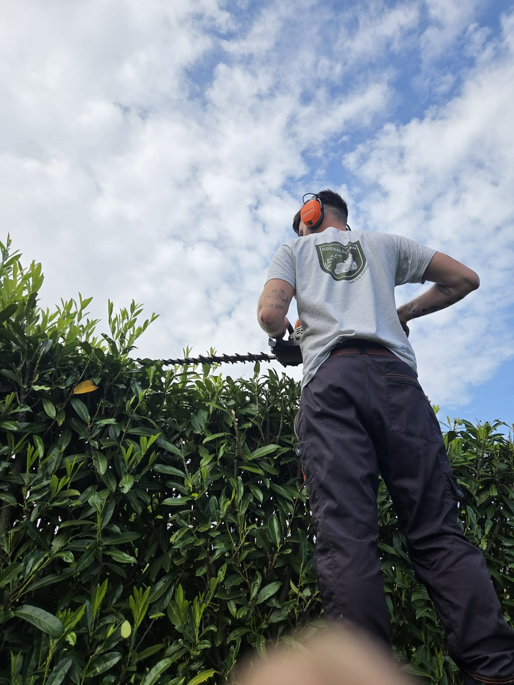

Respect du vivant
Pas de produit superflu, pas de geste précipité. Chaque taille suit le rythme de la plante, chaque sol est nourri avant d'être travaillé.

Green Clean
Jeune indépendant passionné, j'imagine, entretiens et débroussaille vos espaces verts avec le soin que mérite chaque arbre, chaque massif, chaque saison.

Le fondateur
À 25 ans, Louis Rouvroy est le fondateur de Green Clean, une entreprise spécialisée dans l'aménagement et l'entretien des espaces verts.
Animé par une véritable passion pour la nature et le travail bien fait, il met son expertise et son dynamisme au service de ses clients.
Pour créer et préserver des jardins harmonieux, esthétiques et durables, son approche repose sur la qualité et la confiance.
Ma manière de faire
Pas de produit superflu, pas de geste précipité. Chaque taille suit le rythme de la plante, chaque sol est nourri avant d'être travaillé.
C'est mon métier, c'est aussi ma vocation. Je viens moi-même, je propose moi-même, et je signe chaque réalisation comme un travail personnel.
Un interlocuteur unique, joignable, qui connaît votre jardin par cœur. Pas de centrale d'appel, pas de sous-traitance — simplement moi.

Au fil des saisons
Commencer
Parlez-moi de votre jardin. Je viens vous rencontrer, je vous propose, et je m'engage personnellement sur la suite.